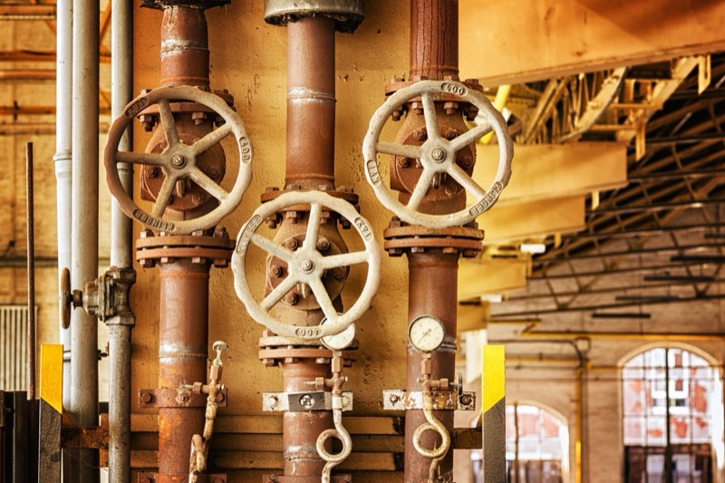

Industrial Plant Reliability Improvement
Equipment reliability assessments, a revised maintenance strategy and a prioritised improvement plan for a group of critical plant assets.

-
01 Challenge
A fictional processing plant was experiencing frequent unplanned stoppages on a group of pumps, fans and gearboxes. Maintenance was largely reactive, and the preventive maintenance schedule had been inherited from manufacturers’ manuals without review.
-
02 Approach
Carry out equipment reliability assessments on critical assets, review failure history and work order records, and run a criticality ranking workshop with operations and maintenance staff. Apply RCM principles to the highest-ranked assets and root cause analysis to recurring failures.
-
03 Deliverables
- Asset criticality register
- Equipment condition assessment reports
- Revised maintenance strategy with task and interval recommendations
- Prioritised reliability improvement plan
-
04 Intended outcome
Move critical assets from reactive to planned maintenance, reduce repeat failures by addressing root causes, and give the site clear priorities for maintenance effort and budget.